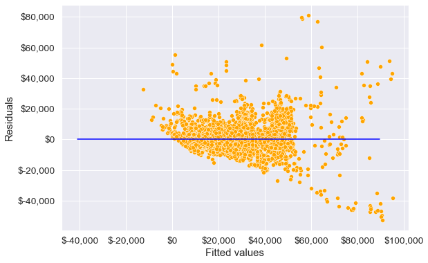
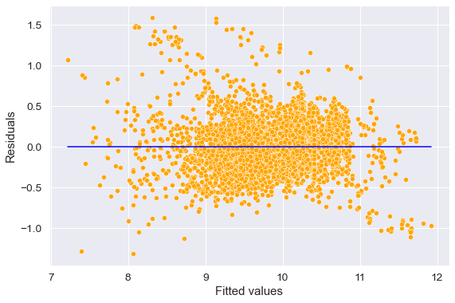
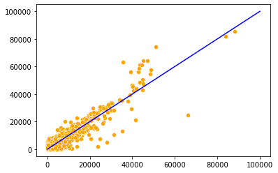
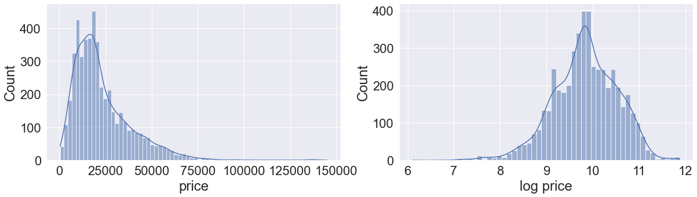

import pandas as pd
import numpy as np
import statsmodels.formula.api as smf
import seaborn as sns
import matplotlib.pyplot as plt4 Model assumptions
Read section 3.3.3 (1 & 3) of the book before using these notes.
Note that in this course, lecture notes are not sufficient, you must read the book for better understanding. Lecture notes are just implementing the concepts of the book on a dataset, but not explaining the concepts elaborately.
Consider the model with interactions and transformation developed previously.
trainf = pd.read_csv('./Datasets/Car_features_train.csv')
trainp = pd.read_csv('./Datasets/Car_prices_train.csv')
testf = pd.read_csv('./Datasets/Car_features_test.csv')
testp = pd.read_csv('./Datasets/Car_prices_test.csv')
train = pd.merge(trainf,trainp)
train.head()| carID | brand | model | year | transmission | mileage | fuelType | tax | mpg | engineSize | price | |
|---|---|---|---|---|---|---|---|---|---|---|---|
| 0 | 18473 | bmw | 6 Series | 2020 | Semi-Auto | 11 | Diesel | 145 | 53.3282 | 3.0 | 37980 |
| 1 | 15064 | bmw | 6 Series | 2019 | Semi-Auto | 10813 | Diesel | 145 | 53.0430 | 3.0 | 33980 |
| 2 | 18268 | bmw | 6 Series | 2020 | Semi-Auto | 6 | Diesel | 145 | 53.4379 | 3.0 | 36850 |
| 3 | 18480 | bmw | 6 Series | 2017 | Semi-Auto | 18895 | Diesel | 145 | 51.5140 | 3.0 | 25998 |
| 4 | 18492 | bmw | 6 Series | 2015 | Automatic | 62953 | Diesel | 160 | 51.4903 | 3.0 | 18990 |
ols_object = smf.ols(formula = 'price~(year+engineSize+mileage+mpg)**2+I(mileage**2)', data = train)
model = ols_object.fit()
model.summary()| Dep. Variable: | price | R-squared: | 0.732 |
| Model: | OLS | Adj. R-squared: | 0.731 |
| Method: | Least Squares | F-statistic: | 1229. |
| Date: | Wed, 25 Jan 2023 | Prob (F-statistic): | 0.00 |
| Time: | 11:36:00 | Log-Likelihood: | -51911. |
| No. Observations: | 4960 | AIC: | 1.038e+05 |
| Df Residuals: | 4948 | BIC: | 1.039e+05 |
| Df Model: | 11 | ||
| Covariance Type: | nonrobust |
| coef | std err | t | P>|t| | [0.025 | 0.975] | |
| Intercept | -1.282e+06 | 7.14e+05 | -1.795 | 0.073 | -2.68e+06 | 1.18e+05 |
| year | 632.3954 | 353.865 | 1.787 | 0.074 | -61.338 | 1326.128 |
| engineSize | -1.465e+06 | 1.61e+05 | -9.129 | 0.000 | -1.78e+06 | -1.15e+06 |
| mileage | 56.4581 | 3.811 | 14.815 | 0.000 | 48.987 | 63.929 |
| mpg | -2.951e+04 | 9550.775 | -3.089 | 0.002 | -4.82e+04 | -1.08e+04 |
| year:engineSize | 735.8074 | 79.532 | 9.252 | 0.000 | 579.890 | 891.725 |
| year:mileage | -0.0281 | 0.002 | -14.898 | 0.000 | -0.032 | -0.024 |
| year:mpg | 14.6915 | 4.731 | 3.105 | 0.002 | 5.417 | 23.966 |
| engineSize:mileage | -0.0808 | 0.011 | -7.143 | 0.000 | -0.103 | -0.059 |
| engineSize:mpg | -120.5780 | 11.384 | -10.592 | 0.000 | -142.896 | -98.260 |
| mileage:mpg | 0.0026 | 0.000 | 5.173 | 0.000 | 0.002 | 0.004 |
| I(mileage ** 2) | 3.495e-07 | 1.56e-07 | 2.236 | 0.025 | 4.31e-08 | 6.56e-07 |
| Omnibus: | 1958.631 | Durbin-Watson: | 0.542 |
| Prob(Omnibus): | 0.000 | Jarque-Bera (JB): | 44560.042 |
| Skew: | 1.349 | Prob(JB): | 0.00 |
| Kurtosis: | 17.434 | Cond. No. | 1.73e+13 |
Notes:
[1] Standard Errors assume that the covariance matrix of the errors is correctly specified.
[2] The condition number is large, 1.73e+13. This might indicate that there are
strong multicollinearity or other numerical problems.
np.sqrt(model.mse_resid)8502.851955843495#Computing RMSE on test data
pred_price = model.predict(testf)
np.sqrt(((testp.price - pred_price)**2).mean())8708.676318160937#Computing MAE on test data
pred_price = model.predict(testf)
(np.abs(testp.price - pred_price)).mean()5395.006622253402Let us check if this model satisfies the assumptions of the linear regression model
4.1 Non-linearity of data
We have assumed that there is a linear relationship between the predictors and the response. Residual plots, which are scatter plots of residuals vs fitted values, can be used to identify non-linearity. Fitted values are the values estimated by the model on training data, denoted by \(\hat y_i\), and residuals are given by \(e_i = y_i - \hat y_i\).
#Plotting residuals vs fitted values
plt.rcParams["figure.figsize"] = (9,6)
sns.set(font_scale=1.25)
ax = sns.scatterplot(x = model.fittedvalues, y=model.resid,color = 'orange')
sns.lineplot(x = [pred_price.min(),pred_price.max()],y = [0,0],color = 'blue')
plt.xlabel('Fitted values')
plt.ylabel('Residuals')
ax.yaxis.set_major_formatter('${x:,.0f}')
ax.xaxis.set_major_formatter('${x:,.0f}')
The model seems to satisfy this assumption, as we do not observe a strong pattern in the residuals around the line Residuals = 0. Residuals are distributed more or less in a similar manner on both sides of the blue line for all fitted values.
For the model to satisfy the linearity assumption perfectly, the points above the line (Residuals = 0), should be mirror image of the points below the line, i.e., the blue line in the above plot should act as a mirror.
What to do if there is non-linear association (page 94 of book): If the residual plot indicates that there are non-linear associations in the data, then a simple approach is to use non-linear transformations of the predictors, such as \(log X, \sqrt X\), and \(X^2\), in the regression model.
4.2 Non-constant variance of error terms
The variance of the error terms is assumed to be constant, i.e., \(Var(\epsilon_i) = \sigma^2\), and this assumption is used while deriving the standard errors of the regression coefficients. The standard errors in turn are used to test the significant of the predictors, and obtain their confidence interval. Thus, violation of this assumption may lead to incorrect inference. Non-constant variance of error terms, or violation of the constant variance assumption, is called heteroscedasticity.
This assumption can be checked by plotting the residuals against fitted values.
#Plotting residuals vs fitted values
ax = sns.scatterplot(x = model.fittedvalues, y=model.resid,color = 'orange')
sns.lineplot(x = [pred_price.min(),pred_price.max()],y = [0,0],color = 'blue')
plt.xlabel('Fitted values')
plt.ylabel('Residuals')
ax.yaxis.set_major_formatter('${x:,.0f}')
ax.xaxis.set_major_formatter('${x:,.0f}')
We see that the variance of errors seems to increase with increase in the fitted values. In such a case a log transformation of the response can resolve the issue to some extent. This is because a log transformation will result in a higher shrinkage of larger values.
#Model with an interaction term and a variable transformation term
ols_object = smf.ols(formula = 'np.log(price)~(year+engineSize+mileage+mpg)**2+I(mileage**2)', data = train)
model_log = ols_object.fit()
model_log.summary()| Dep. Variable: | np.log(price) | R-squared: | 0.803 |
| Model: | OLS | Adj. R-squared: | 0.803 |
| Method: | Least Squares | F-statistic: | 1834. |
| Date: | Wed, 25 Jan 2023 | Prob (F-statistic): | 0.00 |
| Time: | 11:37:55 | Log-Likelihood: | -1173.8 |
| No. Observations: | 4960 | AIC: | 2372. |
| Df Residuals: | 4948 | BIC: | 2450. |
| Df Model: | 11 | ||
| Covariance Type: | nonrobust |
| coef | std err | t | P>|t| | [0.025 | 0.975] | |
| Intercept | -238.2125 | 25.790 | -9.237 | 0.000 | -288.773 | -187.652 |
| year | 0.1227 | 0.013 | 9.608 | 0.000 | 0.098 | 0.148 |
| engineSize | 13.8349 | 5.795 | 2.387 | 0.017 | 2.475 | 25.195 |
| mileage | 0.0005 | 0.000 | 3.837 | 0.000 | 0.000 | 0.001 |
| mpg | -1.2446 | 0.345 | -3.610 | 0.000 | -1.921 | -0.569 |
| year:engineSize | -0.0067 | 0.003 | -2.324 | 0.020 | -0.012 | -0.001 |
| year:mileage | -2.67e-07 | 6.8e-08 | -3.923 | 0.000 | -4e-07 | -1.34e-07 |
| year:mpg | 0.0006 | 0.000 | 3.591 | 0.000 | 0.000 | 0.001 |
| engineSize:mileage | -2.668e-07 | 4.08e-07 | -0.654 | 0.513 | -1.07e-06 | 5.33e-07 |
| engineSize:mpg | 0.0028 | 0.000 | 6.842 | 0.000 | 0.002 | 0.004 |
| mileage:mpg | 7.235e-08 | 1.79e-08 | 4.036 | 0.000 | 3.72e-08 | 1.08e-07 |
| I(mileage ** 2) | 1.828e-11 | 5.64e-12 | 3.240 | 0.001 | 7.22e-12 | 2.93e-11 |
| Omnibus: | 711.515 | Durbin-Watson: | 0.498 |
| Prob(Omnibus): | 0.000 | Jarque-Bera (JB): | 2545.807 |
| Skew: | 0.699 | Prob(JB): | 0.00 |
| Kurtosis: | 6.220 | Cond. No. | 1.73e+13 |
Notes:
[1] Standard Errors assume that the covariance matrix of the errors is correctly specified.
[2] The condition number is large, 1.73e+13. This might indicate that there are
strong multicollinearity or other numerical problems.
Note that the coefficient of year turns out to be significant (at 5% significance level), unlike in the previous model. Intuitively, the coefficient of year should have been significant, as year has the highest linear correlation of 50% with car price.
Although the R-squared has increased as compared to the previous model, violation of this assumption does not cause bias in the regression coefficients. Thus, there may not be a large improvement in the model fit, unless we add predictor(s) to address heteroscedasticity.
Let us check the constant variance assumption again.
#Plotting residuals vs fitted values
sns.scatterplot(x = (model_log.fittedvalues), y=(model_log.resid),color = 'orange')
sns.lineplot(x = [model_log.fittedvalues.min(),model_log.fittedvalues.max()],y = [0,0],color = 'blue')
plt.xlabel('Fitted values')
plt.ylabel('Residuals')Text(0, 0.5, 'Residuals')
Now we observe that the constant variance assumption is satisfied. Let us see the RMSE of this model on test data.
#Computing RMSE on test data
pred_price_log = model_log.predict(testf)
np.sqrt(((testp.price - np.exp(pred_price_log))**2).mean())9094.209503063496Note that the RMSE of the log-transformed model has increased as compared to the model without transformation. Does it mean the log-transformed model is less accurate?
#Computing MAE on test data
pred_price_log = model_log.predict(testf)
((np.abs(testp.price - np.exp(pred_price_log))).mean())5268.398904745121Although the RMSE has increased a bit for the log-transformed model, the MAE has reduced. This means the log-transformed model does a bit worse on reducing relatively large errors, but does better in reducing the absolute errors on an average.
#Comparing errors of the log-transformed model with the previous model
err = np.abs(testp.price - pred_price)
err_log = np.abs(testp.price - np.exp(pred_price_log))
sns.scatterplot(x = err,y = err_log, color = 'orange')
sns.lineplot(x = [0,100000], y = [0,100000], color = 'blue')
np.sum(err_log<err)/len(err)0.5572604790419161
For 56% of the cars, the log transformed makes a more accurate prediction than the previous model, which is another criterion based on which the log-transformed model is more accurate. However, the conclusion based on RMSE is different. This is because RMSE can be influenced by a few large errors. Thus, RMSE, though sometimes appropriate than other criteria, should not be used as the sole measure to compare the accuracy of models.
#Visualizing the distribution of price and log(price)
fig = plt.figure()
fig.subplots_adjust(hspace=0.4, wspace=0.2)
sns.set(rc = {'figure.figsize':(20,12)})
sns.set(font_scale = 2)
ax = fig.add_subplot(2, 2, 1)
sns.histplot(train.price,kde=True)
ax.set(xlabel='price', ylabel='Count')
ax = fig.add_subplot(2, 2, 2)
sns.histplot(np.log(train.price),kde=True)
ax.set(xlabel='log price', ylabel='Count')[Text(0.5, 0, 'log price'), Text(0, 0.5, 'Count')]
We can see that the log transformation shrinked the higher values of price, making its distribution closer to normal.
Note that heteroscedasticity can also occur due to model misspecification, i.e., in case of missing predictor(s). Some of the cars are too expensive, which makes the price distribution skewed. Perhaps, the price of expensive cars could be better explained by the car model, a predictor that is missing in the current model.